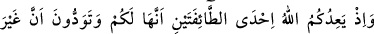
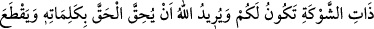
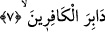
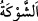
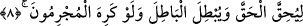

Tabiat ve nefsinden, hatta kalıbından ve kalbinden fânî olan kimse onların sevgisinden
de fânî olur. İkilikten kurtulur. Artık ötesinde hiçbir gaye olmayan mahbûbiyet (Allah
tarafından sevilme) makamına ulaşır.
Allah, lütuf ve keremiyle bu makama ermeyi bize de size de nasip eylesin!
7. Hatırlayın ki, Allah size iki topluluktan (kervan veya Kureyş ordusundan)
birinin sizin olduğunu va’dediyordu; siz de kuvvetsiz olanın (kervanın) sizin
olmasını istiyordunuz. Oysa Allah, sözleriyle hakkı gerçekleştirmek ve (Kureyş
ordusunu yok ederek) kâfirlerin ardını kesmek istiyordu.
Ey müminler! “Hatırlayın” o vakti “ki, Allah size iki topluluktan” kervanla birlikte
Ebû Süfyan’ı veya Kureyş ordusuyla birlikte Ebû Cehil’den “birinin sizin olduğunu”
size tahsis edildiğini, âmâde kılındığını, mal sahiplerinin mallarını çekip çevirdiği gibi
ona sahip olacağınızı ve onda dilediğiniz gibi tasarrufta bulunacağınızı “vâdediyordu;
Siz de” iki topluluktan “kuvvetsiz olanın sizin olmasını istiyordunuz.” Kuvvetli olan
Kureyş ordusu idi. Başlarında Ebû Cehil bulunuyordu ve bin savaşçıdan müteşekkildi.
Kuvvetsiz olan ise kervandı. Kervanda ise sadece kırk atlı vardı. Reisleri Ebû
Süfyan’dı. İşte bu sebeple onlar kervanı istiyordu.
“
”, keskinlik mânâsına gelir. Burada mızrak, kılıç ve ok gibi keskin yönleri olan
silahlar kastedilmiştir. İğne ucu gibi keskin ucu bulunan diken (eş-şevk) bitkisinden
hareketle sivri uçları olan silahları ifade için bu kelime kullanılmıştır.
Allah Teâlâ’nın size iki topluluktan birini vâdetmesini, sizin onlardan daha zayıf olanı
arzu ettiğiniz vakti ve Allah Teâlâ’nın şu sözünü hatırlayın: “Oysa Allah, sözleriyle”
size savaş emrini vererek “hakkı gerçekleştirmek” sabit kılmak, yüceltmek “ve
kâfirlerin ardını kesmek” onlara son vermek ve tamamen ortadan kaldırmak
“istiyordu.”
Yâni “Siz mal elde etmek ve bir zorlukla karşılaşmamak istiyordunuz. Allah ise dînini
yüceltmeyi, hakkı ızhâr etmeyi ve sizin iki cihan saadetini elde etmenizi te’min edecek
şeyleri istiyordu.
8. (Bunlar,) günahkarlar istemese de hakkı gerçekleştirmek ve bâtılı ortadan
kaldırmak içindi.